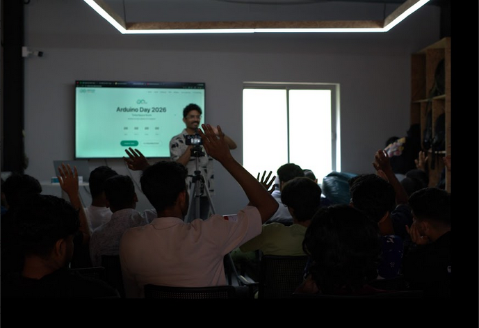

The day began with a warm welcome to all participants makers, students, professionals, and
first-time tinkerers who had gathered at Tinker Space for Arduino Day 2026. The opening session
set the tone for what was to be a full day of learning, building, and community.
Attendees were introduced to the co-organisers TinkerSpace and MakerGram and briefly
acquainted with the people behind the event, including the speakers and facilitators who would
be leading sessions through the day.
Following the welcome, the structure of the program was laid out for participants:
Talks insights and experiences shared by makers and technologists
Open Sessions free-form time for exploration and building
Competition a challenge for participants to demonstrate what they'd learned
The introduction also encouraged participants to engage openly, ask questions, and make the
most of the community around them. With the stage set and the energy high, Arduino Day 2026 was
officially underway.